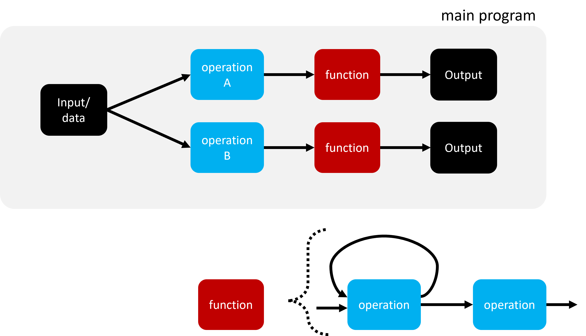
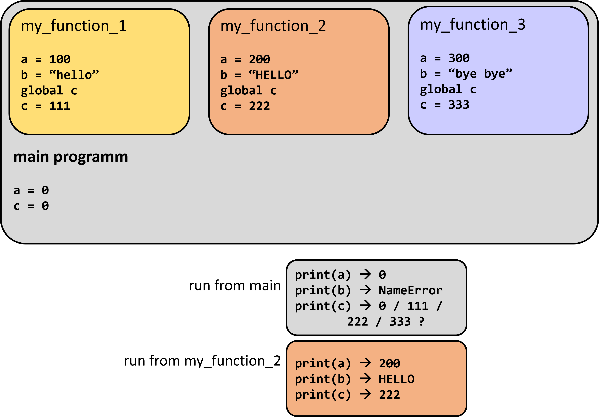

6. Funktionen#
Wir haben schon Funktionen benutzt: print(), type(), aber auch int() oder str().
Diese Funktionen sind bei Python schon „eingebaut“.
Die meisten Funktionen die wir nutzen werden sind aber entweder:
selbst geschrieben (oder: definiert)
importiert (geladen)
Wir werden beide Fälle besprechen.
Funktionen spielen beim Erstellen komplexere Programme eine entscheidende Rolle, den mit Funktionen lassen sich auch umfangreiche Abläufe sinnvoller und übersichtlicher strukturieren.

6.1. Definieren von Funktionen#
def gute_sache():
print("Einmal Aufgeschrieben...")
print("... 1000x benutzt!")
print("Wieder 3 Zeilen Code gespart.")
Wenn wir diesen Code ausführen passiert aber erstmal nix! Funktionen werden erst beim expliziten Aufrufen ausgeführt:
gute_sache()
Diese Funktion gibt nichts zurück (nur print) und verlangt keine Argumente.
Die allgemeine Struktur von Funktionen ist:
def function_name(parameter1, parameter2, etc):
# code
return result
Besser sogar noch so, mit einem sogenannten Docstring der die grundlegende Dokumentation der Funktion darstellt. Hierin können die Funktion und die Parameter beschrieben werden. Zusätzlich kann aber auch ein Code Beispiel angegeben werden oder Referenzen genannte werden.
def function_name(parameter1, parameter2, ...):
"""Hier wird die Funktion beschrieben
"""
# code
return result
Es gibt auch Funktionen ohne parameter (siehe oben gute_sache()).
Ausserdem kann man defaults festlegen! Diese werden genutzt, falls kein neuer Wert für die entsprechenden Parameter eingegeben wird.
def function_name(p1, p2=3.1415):
"""Hier wird die Funktion beschrieben
"""
... code ...
return result
Hier ein anderes Beispiel einer einfachen Funktion mit 2 Parametern:
def x_vs_y(x, y):
"""Compare the numbers x and y.
"""
if x == y:
print("They are equal!")
elif x > y:
print(f"{x} is bigger than {y}")
else:
print(f"{x} is smaller than {y}")
x_vs_y(10, 70) # => 10 is smaller than 70
x_vs_y(0.000001, 1e-5) # => 1e-06 is smaller than 1e-05
Aber was nicht funktioniert ist:
x_vs_y(10) # => TypeError: x_vs_y() missing 1 required positional argument: 'y'
6.1.1. Default Werte#
Hier eine Beispielfunktion in der einer der beiden möglichen Parameter einen Default-Wert erhält:
def boxes_to_eggs(n_boxes, eggs_per_box=6):
"""Compute the total number of eggs in n_boxes boxes.
"""
return n_boxes * eggs_per_box
print(boxes_to_eggs(5)) # => 30
print(boxes_to_eggs(5, 10)) # => 50
print(boxes_to_eggs(5, eggs_per_box=10)) # => 50
print(boxes_to_eggs(eggs_per_box=10, n_boxes=5)) # => 50
ABER… Folgendes geht nicht, da die benannte Parameter nicht vor unbenannten an die Funktion übergeben werden dürfe.
print(boxes_to_eggs(n_boxes=5, 10)) # => SyntaxError: positional argument follows keyword argument
6.1.2. Optional:#
Die Frage der Reihenfolge wird bei weiteren möglichen Parametern noch wichtiger. Versehentliche Vertauschungen können teilweise zwar zu funktionierendem Code führen, aber nicht zu den gewünschten Ergebnissen…
def boxes_to_eggs(n_boxes,
eggs_per_box=6,
broken_eggs_per_box=0):
"""Compute the total number of eggs in n_boxes boxes.
"""
return int(n_boxes * (eggs_per_box - broken_eggs_per_box))
print(boxes_to_eggs(5)) # => 30
print(boxes_to_eggs(5, 10)) # => 50
print(boxes_to_eggs(5, eggs_per_box=10)) # => 50
print(boxes_to_eggs(5, broken_eggs_per_box=0.25)) # => 25
print(boxes_to_eggs(5, eggs_per_box=10,
broken_eggs_per_box=0.25)) # => 48
print(boxes_to_eggs(5, broken_eggs_per_box=0.25,
eggs_per_box=10)) # => 48
Aber…
print(boxes_to_eggs(5, 10, 0.25)) # => 48
print(boxes_to_eggs(5, 0.25, 10)) # => -48 !!!
MINI Quiz
Eine Funktion kann Werte/Daten zurück geben an das Programm über…
a) print
b) return
c) out
d) assertEine Funktion ohne „return“ statement gibt folgendes zurück…
a) Nichts
b) die Parameter
c) die Variablen
d) None
6.1.3. Return - irgendwas kommt immer zurück#
Wie wir oben schon gesehen haben enthalten viele Funktionen die wir in Python schreiben ein sogenanntes Return-Statement. Das macht zwei Dinge. Es beendet die Ausführung der Funktion und es gibt einen oder mehrere Werte zurück („Rückgabewerte“). Zum Beispiel return variable1, variable2 würde die Werte der lokalen Variablen variable1 und variable2 zurückgeben.
Eine Funktion benötigt jedoch kein explizites return-Statement. Wir hatten oben auch Beispiele von Funktionen gesehen, die kein return enthalten, ein einfaches (sinnfreies) Beispiel wäre
def double_print(input_str):
print(2 * input_str)
double_print("Hello World!") # --> Hello World!Hello World!
In Python kann es allerdings keine Funktion ohne Rückgabewert haben. Darum geben Funktionen die sonst nichts zurückgeben würden ein None zurück. So auch die print() Funktion selber:
what_comes_back = print("hello")
print(what_comes_back) # --> None
6.1.3.1. return muss nicht am Ende stehen#
Auch wenn wir dies häufig sehen, v.a. zu Beginn: das return-Statement muss keinesfalls am Ende einer Funktion stehen. Und es kann auch mehrere return-Statements geben. Zum Beispiel:
def pick_smallest(a, b):
if a > b:
return b
if a < b:
return a
print("They look alike!")
Diese Funktion endet mit dem ersten oder dem zweiten return-Statement. Oder keines von beidem trifft zu, dann wird print() aufgerufen und -wie wir gerade gelernt haben- ein None zurückgegeben.
6.1.4. Namensräume (name space)#
Unter einem Namensraum versteht man einen Teil (oder Raum) innerhalb eines Programmes, in dem ein Name (z.B. Variablen und Funktionen) gültig ist. In Python gibt es v.a. drei Arten solcher Geltungsbereiche:
Lokaler Geltungsbereich (innerhalb einer Funktion oder Methode)
Globaler Geltungsbereich (verfügbar für alle Teile eines Programmes, bzw. innerhalb eines Interpreters)
Eingebauter Geltungsbereich (von Python definierte Namen sind immer gültig)
Aber schauen wir das Ganze besser mal an einigen Beispielen an:
a = 5
b = 7
def do_stuff():
# a wird lokal nicht definiert!
# gerne testen: print(a)
# gerne testen: print(locals())
return a + b
result = do_stuff()
print(a, b, result) # => 5 7 12
Die von uns definierte Funktion do_stuff() kann also einfach auf die Variablen a und b zugreifen. Das liegt daran, dass dies in Python globale Variablen sind. Sie wurden im Programm außerhalb von Funktionen/Methoden zugewiesen und sind für alle Teile eines Programmes erreichbar.
a = 5
b = 7
def do_stuff():
a = 1000
#print(a) # hiermit kann man a innerhalb der Funktion anschauen
#print(locals()) # hiermit werden die lokalen Variablen gezeigt
return a + b
result = do_stuff()
print(a, b, result) # => 5 7 1007
Hier wurde eine Variable die ebenfalls den Namen a trägt innerhalb einer Funktion zugewiesen und genutzt. Variablen die innerhalb von Funktionen zugewiesen werden sind in Python lokale Variablen, d.h. sie sind nur innerhalb der jeweiligen Funktion verfügbar. Wie man im obigen Beispiel sieht, wird dadurch auch keineswegs die globale Variable a verändert.

Genau das ist nämlich auch nicht erlaubt in Python. Globale Variablen können lokal zwar benutzt, aber in der Regel nicht verändert werden!
def do_stuff():
a = a * 2
return a
a = 10
do_stuff() # ==> UnboundLocalError: local variable 'a' referenced before assignment
Eine Ausnahme ist, wenn Variablen innerhalb einer Funktion explizit als global gesetzt werden:
def do_stuff():
global a # defines a new global variable
a = a * 2
return a
a = 10
do_stuff()
WICHTIG: Das Arbeiten mit globalen Variablen ist in den allermeisten Fällen nicht zu empfehlen! Es wird nämlich sehr schnell unklar wann und wo eine bestimmte Variable überall verändert wird. Häufig führt dies zu ungewünschten Ergebnissen die dazu noch sehr schwer zu verstehen und zu beheben sein können.
Best Practice: Es ist darum sehr zu empfehlen einer Funktionen alle Parameter die diese benötigt explizit zu übergeben:
def do_stuff(a):
a = a * 2
return a
do_stuff(10)
6.1.5. Hä? Wann wird jetzt was verändert??#
Gerade haben wir gesehen, dass globale Variablen nicht lokal in einer Funktion geändert werden können. Das gilt aber nur für unveränderbare (inmmutable) Datentypen, so wie int, float, tuple.
Bei veränderbaren (mutable) Datentypen sieht das anders aus. Zumindest wenn deren eigene Methoden genuzte werden (also Funktionen die mit .xzy() aufgerufen werden).
In diesen Fällen wird die Methode direkt auf das Objekt selbst angewandt:
def do_other_stuff():
my_list.append(55)
my_list = [1, 2]
do_other_stuff()
print(my_list) # => [1, 2, 55]
my_list wurde also durch do_other_stuff() verändert.
Wohingegen Folgendes nicht geht:
def do_other_stuff():
my_list = my_list + [55]
my_list = [1, 2]
do_other_stuff()
print(my_list) # UnboundLocalError: local variable 'my_list' referenced before assignment
def do_other_stuff(my_list):
my_list.append(55)
my_list = [1, 2]
do_other_stuff(my_list)
print(my_list) # => [1, 2, 55]
Selbst wenn my_list als Parameter an die Funktion übergeben wird, läuft zwar der Code, aber wird doch nicht die globale Variable verändert:
def do_other_stuff(my_list):
my_list = my_list + [55]
print(f"inner function: {my_list}")
my_list = [1, 2]
do_other_stuff(my_list) # => inner function: [1, 2, 55]
print(my_list) # => [1, 2]
Manchmal führt dieses Verhalten zu Schwierigkeiten. Z.B. wenn eine Funktion versehentlich den Anschein erweckt als würde sie einen neuen Wert ausgeben, aber dann leider doch auch den Eingabewert selbst verändert.
Hier mal ein Beispiel. Wir wollen eine Funktion haben die alle Werte einer Liste verdoppelt.
def double_values(values):
for i in range(len(values)):
values[i] = values[i] * 2
return values
my_list = [5, 10, 15]
my_list_x2 = double_values(my_list)
print(my_list, my_list_x2) # => [10, 20, 30] [10, 20, 30]
Wenn in Python Code steht der die Form hat b = my_function(a), dann erwarten wir (zurecht!) das a durch den Aufruf nicht verändert wird.
In dem konkreten Fall kann das auf verschiedene Arten erreicht werden. Entweder eine neue Variable wird in der Funktion angelegt, oder es wird explizit eine echte Kopie erstellt.
def double_values(values_input):
values = values_input.copy() # eine Kopie wird erstellt
for i in range(len(values)):
values[i] = values[i] * 2
return values
my_list = [5, 10, 15]
my_list_x2 = double_values(my_list)
print(my_list, my_list_x2) # => [5, 10, 15] [10, 20, 30]
oder:
def double_values(values_input):
values = [] # eine völlig neue Liste wird angelegt
for val in values_input:
values.append(val * 2)
return values
my_list = [5, 10, 15]
my_list_x2 = double_values(my_list)
print(my_list, my_list_x2) # => [5, 10, 15] [10, 20, 30]
6.1.6. Vorschau#
Im nächsten Teil geht es dann um weitere Typen von Funktionen…